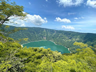

Sopa Marinera Tradicional de Corinto & Paso Caballos
El plato cumbre de la costa occidental nicaragüense. Cazuela humeante preparada con langosta, camarones gigantes, punches enteros, filete de corvina y jaiba fresca, emulsionada en leche de coco y fondo de marisco al fuego de leña.


Indio Viejo Ancestral & Maronco de las Fiestas Patronales
Patrimonio gastronómico de origen precolombino. Masa de maíz criollo cocida con caldo de res desmenuzada, cebolla, chiltoma, achiote campesino, ramas frescas de hierbabuena y el toque ácido inconfundible de la naranja agria caraceña.

Comedor y Templo del Baho Doña Vilma
Carne de res marinada en naranja agria, yuca suave y plátano maduro cocidos al vapor durante 12 horas en hojas de chagüite. Acompañado de ensalada de repollo y chicha de maíz.
Quesillos Mi Bohío & Doña Rosa
Tortilla caliente recién salida del comal, trenza de quesillo artesanal elástica bañada en crema ácida pura de hacienda, cebolla encurtida en vinagre de guineo y tiste helado.
Rosquillería Tradicional Delicias del Norte
Rosquillas tostadas crujientes y hojaldras de maíz blanco con queso seco de montaña y dulce de caña horneadas en leña de roble. Servidas con café de altura recién chorreado.
Cocina Tradicional Creole Miss Pearl
Pescado pargo rojo fresco, langosta, yuca, quequisque, malanga y plátano cocidos a fuego lento en leche de coco recién extraída con chile congo y hierbas caribeñas.

Vigorón Tradicional Granadino Doña Toribia
Cama de yuca harinosa al vapor servida en hoja de plátano, chicharrón con carne crujiente, ensalada de repollo con tomate criollo y vinagre de guineo casero. Refresco de grama natural.
Fritanga Tradicional & Asados El Güegüense
Carne asada a las brasas de carbón vegetal, gallopinto campesino con queso frito dorado, tajadas verdes crocantes, maduro frito con cuajada y cacao helado con leche.


Volcán Telica & Expedición Nocturna de Lava
Uno de los volcanes más activos de Nicaragua (1,061 m). Famoso por su gigantesco cráter humeante de 700 metros de ancho, atardeceres dorados sobre la llanura de León y avistamiento nocturno de magma incandescente.

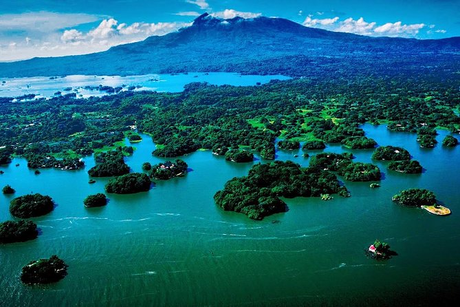
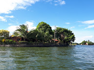
Reserva Natural Volcán Mombacho & Bosque Enano
Ecosistema de nebliselva tropical a 1,344 metros sobre el nivel del mar con orquídeas endémicas, monos aulladores, fumarolas frías y una vista panorámica inigualable de las Isletas de Granada y el Gran Lago Cocibolca.

Volcán San Cristóbal (Trekking al Pico Más Alto)
El volcán más alto de Nicaragua con 1,745 metros de altura. Desafío de montañismo de pendiente pronunciada, cráter con emanaciones de gases sulfurosos y una vista majestuosa de toda la cordillera volcánica hasta el Pacífico.

Reserva Natural Volcán Cosigüina & Laguna Esmeralda
Escenario de la explosión volcánica más violenta de América en 1835. Cráter colosal con laguna verde esmeralda en su interior y vista panorámica simultánea de tres naciones: Nicaragua, Honduras y El Salvador sobre el Golfo de Fonseca.
Volcán Momotombo (El Ronco y Coloso del Xolotlán)
El volcán emblemático inmortalizado por Rubén Darío y Víctor Hugo. Cono perfecto de 1,297 metros a orillas del Lago Xolotlán, senderos entre ríos de lava solidificada y panorámicas inolvidables del lago y las ruinas de León Viejo.
.jpg)

.webp)

Playa Popoyo & Rompiente de Clase Mundial
Epicentro del surf internacional en Nicaragua. Famoso por sus vientos offshore durante más de 300 días al año generados por el Lago Cocibolca, rompiente de fondo rocoso Outer Reef y olas huecas perfectas tanto para principiantes como profesionales.

Playa El Tránsito & Piscinas Naturales de Roca
Encantador pueblo costero de pescadores con una ensenada protegida, piscinas naturales que se llenan con la marea alta, olas dóciles para aprender a surfear y mariscos frescos recién desembarcados de las pangas artesanales.


Parque Nacional Archipiélago Isla Zapatera
Segunda isla más grande del Lago de Nicaragua. Antiguo santuario ceremonial y funerario indígena con la mayor colección de estatuaria y petroglifos precolombinos de Centroamérica (Sonzapote), senderos boscosos vírgenes y lagunas cratéricas.

Safari Fluvial Río San Juan & Reserva Biológica Indio Maíz
Navegación por el histórico Río San Juan hacia los senderos vírgenes de la Reserva Biológica Indio Maíz. Avistamiento de manatíes, jaguares, tucanes, caimanes y monos araña guiados por baqueanos de las comunidades ribereñas.
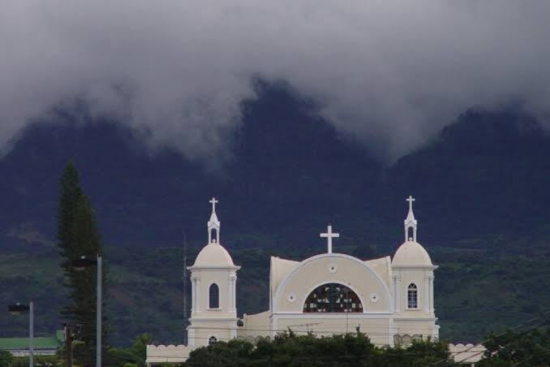

Talleres Campesinos de Escultura en Marmolina
Cuna de los escultores que tallan la piedra jabón o marmolina autóctona. Tradición campesina que plasma gorditas coloniales, aves de la selva, animales sagrados y figuras prehispánicas con cincel y lija fina.
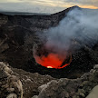
Corredor de Talleres de Madera & Jardines Viveros de Catarina
El jardín botánico viviente de Masaya. Cientos de viveros familiares con orquídeas, bonsáis, flores tropicales, muebles de maderas preciosas talladas a mano y artesanías decorativas frente a la cuenca de la Laguna de Apoyo.

Monumento Nacional Cañón de Somoto
Paredes rocosas de más de 120 metros de altura esculpidas por el Río Coco (Wangki). Natación protegida con chalecos salvavidas y baqueanos campesinos.
Volcán Cerro Negro (Volcano Sandboarding)
El volcán más joven de Centroamérica (1850). Cono de escoria basáltica con fumarolas en la cumbre y descenso de adrenalina sobre arena volcánica a 60-80 km/h.

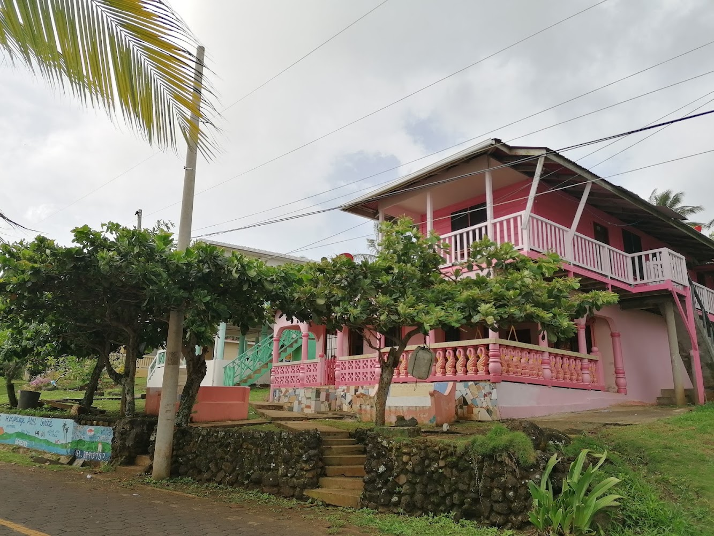
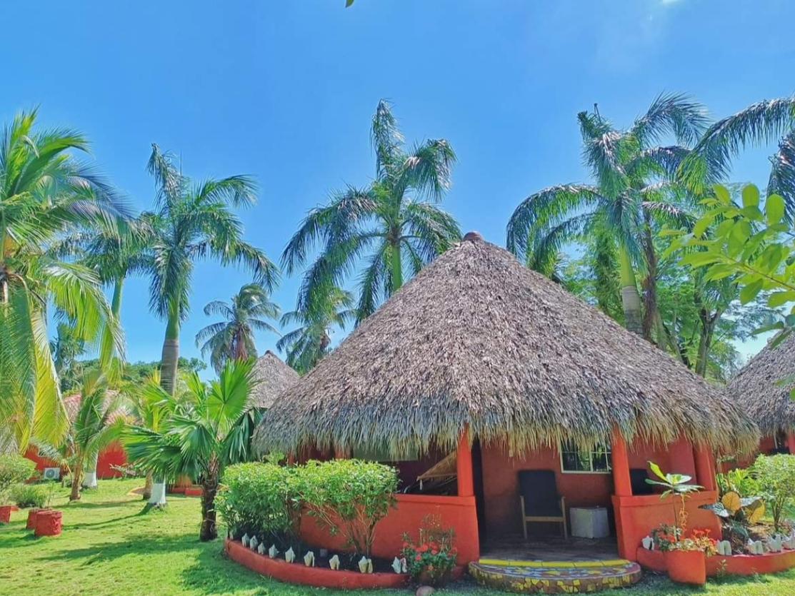
Isla de Ometepe (Concepción & Maderas)
Oasis en medio del Gran Lago con dos volcanes colosales. Petroglifos sagrados, senderismo en bosque nuboso, Ojo de Agua medicinal y fincas agroecológicas.

Playa Maderas (Santuario del Surf)
Famosa por sus formaciones rocosas esculpidas por el oleaje del Pacífico y rompientes constantes durante todo el año. Puestas de sol de fuego y vida playera.

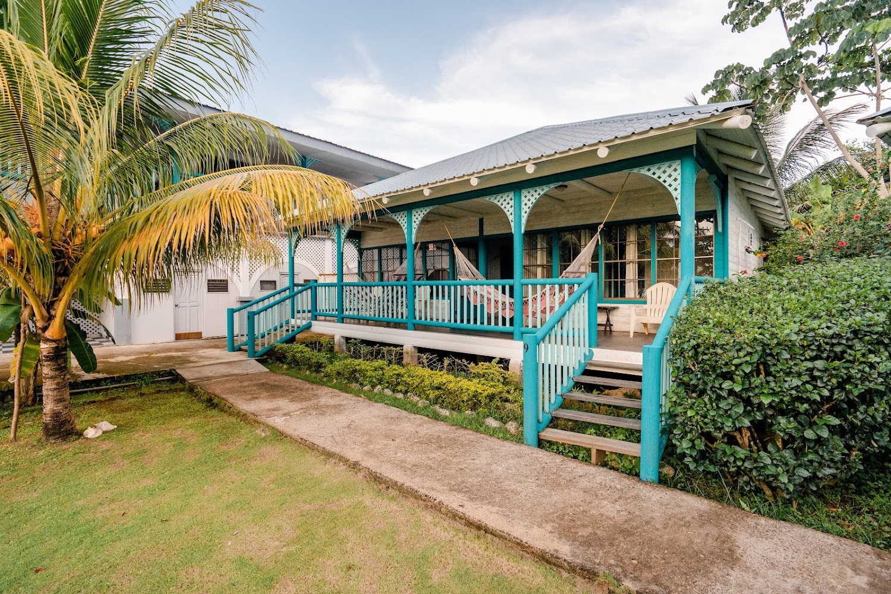
Bahía de San Juan del Sur & Mirador del Cristo
Bahía protegida en herradura con puerto de pescadores artesanales, veleros al atardecer, malecón gastronómico y vista panorámica desde el Cristo de la Misericordia.
Big Corn Island & Little Corn Island
Joya caribeña con arrecifes de coral intactos, buceo con tiburones nodriza, playas de arena blanca como talco, rondón de mariscos fresco y cultura creole bilingüe.
Reserva Ecológica Selva Negra & Finca Cafetalera
Nebliselva virgen a 1,400 msnm con senderos de orquídeas, hábitat del Quetzal resplandeciente, cata de café ecológico y prácticas agroforestales de carbono neutral.
Reserva Natural Laguna de Apoyo
Cráter volcánico colapsado con aguas termales minerales de transparencia turquesa. Kayak ecológico, natación protegida y avistamiento del tucán verde.
Parque Nacional Volcán Masaya (Popogatepe)
El cráter Santiago y su lago de lava incandescente activo. Cruz de Bobadilla, senderos por coladas basálticas, túneles de murciélagos y museo vulcanológico oficial.
Cascada La Luna & Ruta del Café de Altura
Imponente caída de agua en el corazón de la nebliselva jinotegana. Canopy con tirolesas sobre el caudal de la catarata, pozas naturales y cata de café de estricta altura (SHG).

Refugio de Vida Silvestre La Flor & Playa El Coco
Arenas vírgenes del Pacífico sur y santuario biológico mundial donde anidan miles de tortugas paslama en arribadas masivas nocturnas bajo luz de luna.

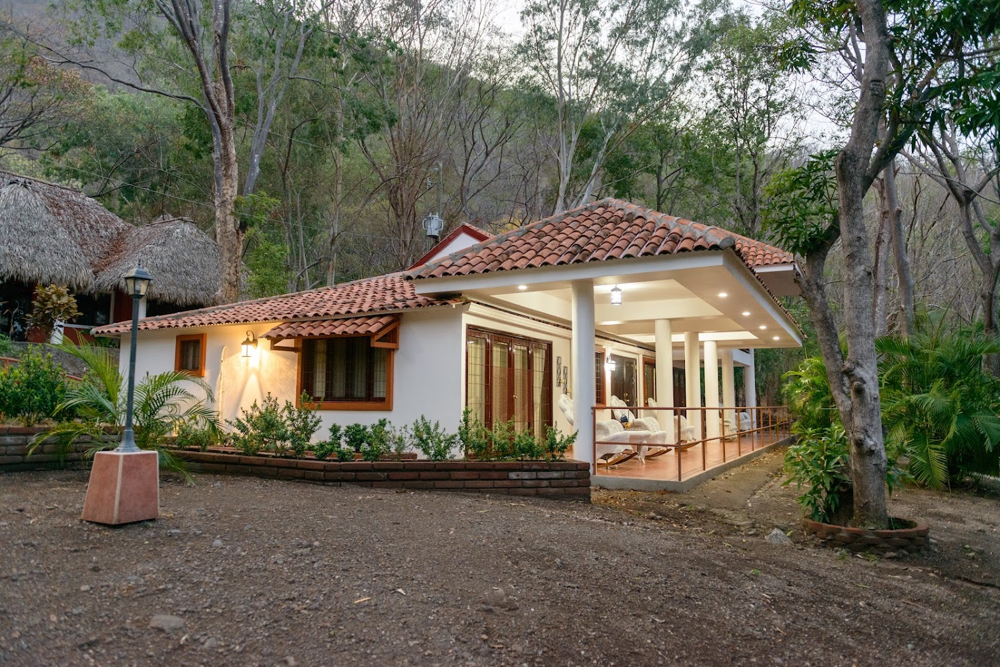
Morgan's Rock Eco-Lodge & Reserva Marina
Bungalows de madera nativa sobre las copas de los árboles en playa privada de 4,000 acres de reserva silvestre. Desayuno campesino de granja orgánica y avistamiento de perezosos.

Hotel Darío Colonial Patrimonio
Arquitectura neoclásica restaurada del siglo XIX con patios coloniales, piscina refrescante y jardines tropicales en plena Calle La Calzada, a pasos del Gran Lago.

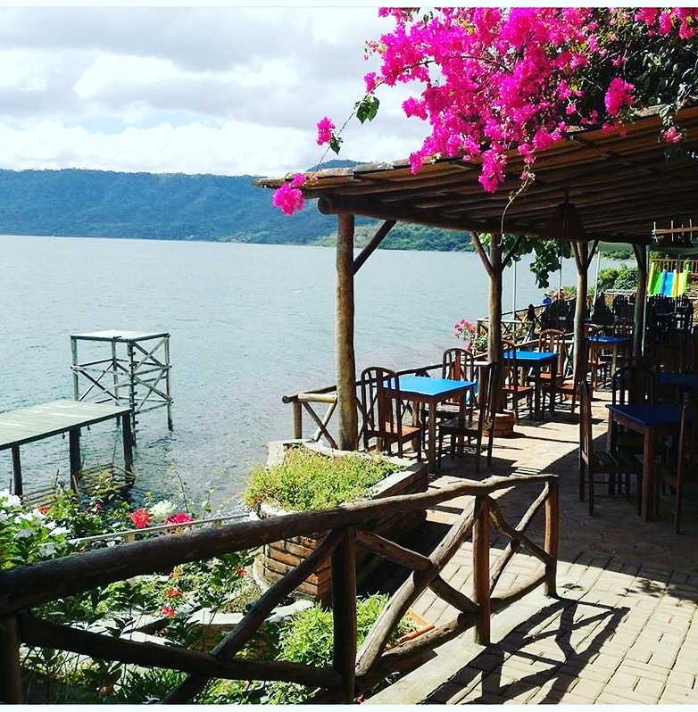
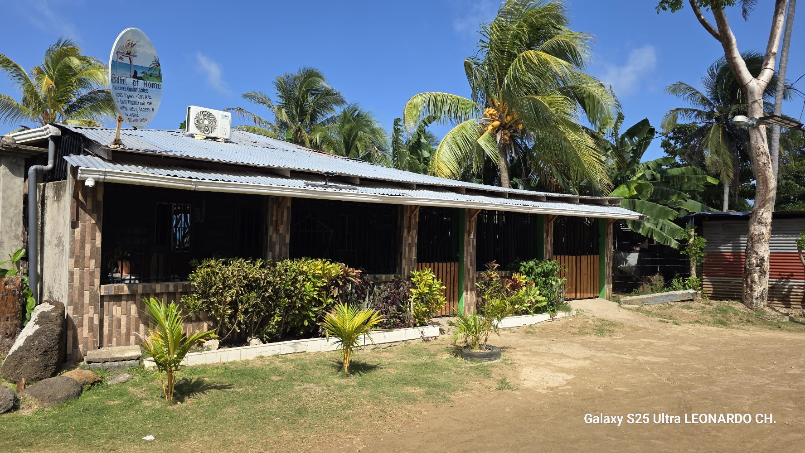
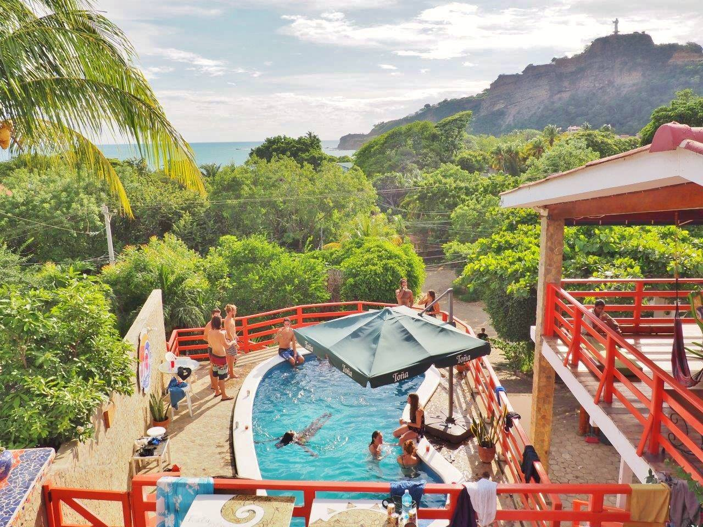
The Treehouse Nicaragua (Hostal en los Árboles)
Hostal de aventura suspendido entre las copas de los árboles en las faldas del Volcán Mombacho. Puentes colgantes, piscina con vistas a la selva y ambiente comunitario.

Poco a Poco Hostel & Cultural Café
Hostal colonial acogedor con piscina en patio central, terraza panorámica para atardeceres leoneses, café de cortesía ilimitado y talleres de intercambio cultural.


Finca Magdalena Eco-Lodge Campesino
Cooperativa agroecológica de café orgánico gestionada por 24 familias campesinas. Punto de partida oficial para el ascenso al cráter y laguna del Volcán Maderas.

Posada Rural San Ramón Ometepe
Cabañas ecológicas familiares en contacto directo con la naturaleza junto a la Estación Biológica y la Cascada de San Ramón. Energía solar limpia y cocina casera de huerto.

Villa Vista Redonda (Emerald Coast)
Villa privada sobre el acantilado con piscina infinita privada, 4 habitaciones climatizadas, terraza panorámica para puestas de sol y acceso directo a Playa Redonda.

Casa Señorial Colonial Granada
Mansión colonial completa de 4 habitaciones con arcos de tejas centenarias, piscina privada en patio central, corredores de madera preciosa y cocinera tradicional bajo pedido.

.jpg)
Museo y Convento San Francisco (1529)
El convento más antiguo de Centroamérica con la colección original de estatuaria prehispánica de la Isla Zapatera esculpida en roca basáltica hace más de 1,200 años.

Fortaleza de la Inmaculada Concepción
Baluarte militar del siglo XVII sobre el raudal del Río San Juan. Hito histórico donde Rafaela Herrera repelió la invasión pirata británica de 1762. Museo de sitio y cañones originales.


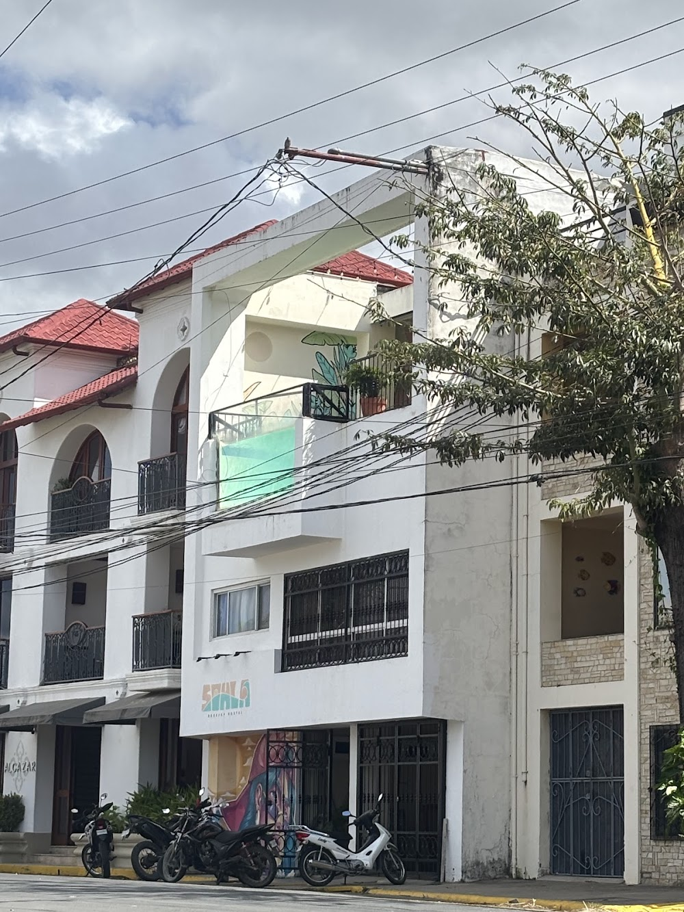
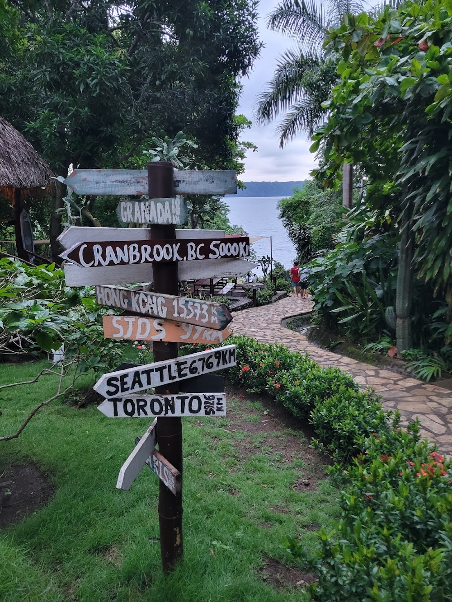
Arribas Sunset Lounge & Club
Música en vivo al atardecer, mixología con ron Flor de Caña, pista sobre la arena frente al Pacífico y gastronomía marina fresca con ambiente vibrante.

Calle La Calzada & Zona Bohemia
Paseo peatonal empedrado con bares al aire libre, música en vivo (marimba, trova, son nica y salsa), cerveza nacional bien fría y tertulias nocturnas bajo faroles coloniales.
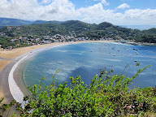

Playa El Coco
Playa de aguas tranquilas y arenas doradas, ideal para el descanso familiar y avistamiento de aves marinas en el corredor del Pacífico sur.
Playa Hermosa
Más de un kilómetro de costa virgen con bosque tropical adyacente. Olas suaves para aprender surf y paseos a caballo por la orilla.
Playa Gigante & Pie de Gigante
Pintoresca bahía de pescadores con su imponente acantilado Pie de Gigante. Mariscos frescos recién desembarcados y ambiente bohemio.
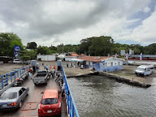
Playa Santo Domingo (Ometepe)
Extensa playa lacustre de arenas blancas sobre el Gran Lago de Nicaragua, ubicada en el istmo entre los volcanes Concepción y Maderas.
Playa Guasacate & Popoyo
Mecca del surf internacional con rompientes huecas consistentes. Pozas de marea naturales para baño y mariscos al estilo campesino costero.
Playa San Juan del Sur
La playa urbana más emblemática del país, con su forma de herradura, aguas calmas, veleros fondeados y gastronomía marina tradicional.
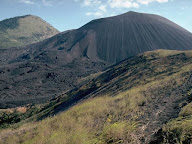
Playa Las Peñitas
Arenas oscuras volcánicas, estuarios de manglar y olas para todos los niveles de surf. Atardeceres de fuego sobre el horizonte pacífico.
Playa El Velero
Playa serena y privada de arena volcánica y aguas calmas. Perfecta para el descanso familiar y la degustación de quesillos tradicionales.
Playa Poneloya
Pueblo balneario histórico de tradición leonesa, puente peatonal hacia la bocana y restaurantes con terrazas sobre la rompiente del mar.
Playa e Isla Juan Venado
Isla barrera de 22 km deshabitada entre el océano y el estero. Santuario de manglares, cocodrilos, aves acuáticas y anidación de tortugas.
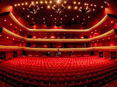
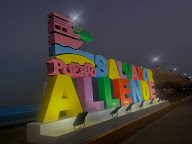
Playa Pochomil
El balneario popular por excelencia del departamento de Managua. Amplia franja de arena, paseos en cuadraciclos y música en vivo.
Playa Masachapa
Pueblo de pescadores artesanales donde adquirir pescado fresco recién salido de las faenas nocturnas y pasear sobre el malecón histórico.
Playa San Diego
Playa de olas rápidas y tubulares ideales para surfistas experimentados. Entorno apacible con estero y avistamiento de pelícanos.
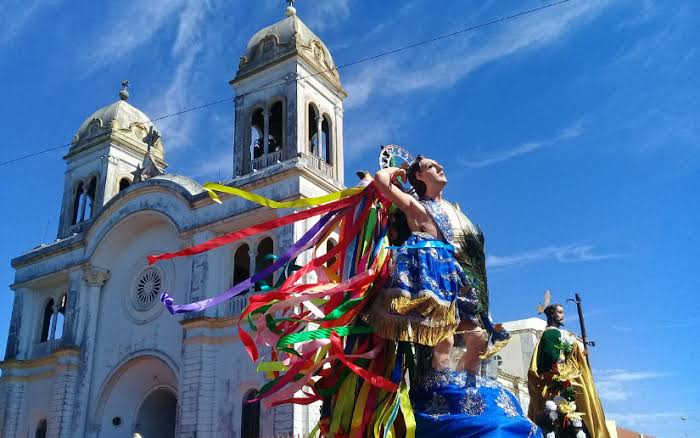
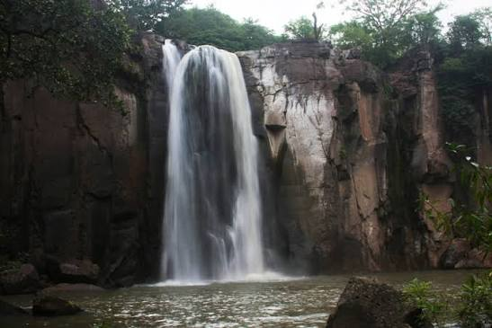
Playa La Boquita
Complejo turístico caraceño de acantilados bajos, rocas coralinas, paseos a caballo y restaurantes con terrazas de madera frente a las olas.
Playa Casares
Bahía rocosa de pescadores donde el río desemboca en el mar. Casas construidas sobre promontorios y ambiente pesquero auténtico.
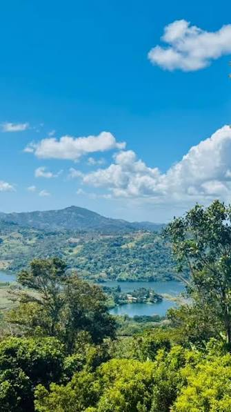
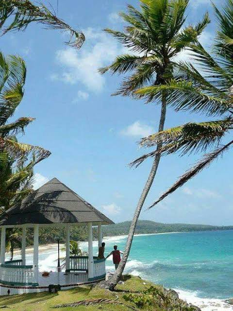
Península y Playa El Bluff
Península caribeña con kilométricas playas de aguas templadas, brisa marina caribeña y puerto de cabotaje a corta distancia en panga desde Bluefields.
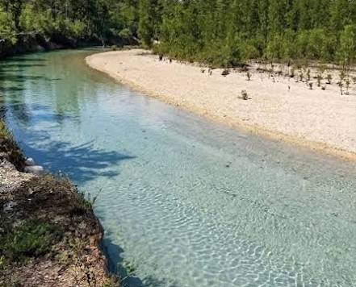
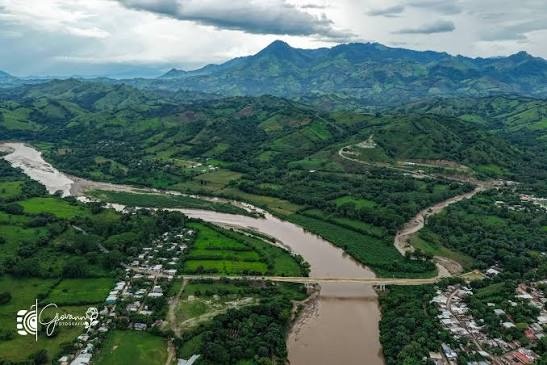
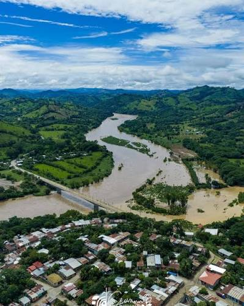
Playa La Bocana de Bilwi
Playa de la costa miskita norte donde desembocan riachuelos de selva. Ambiente festivo caribeño, tambores y mariscos preparados con leche de coco.
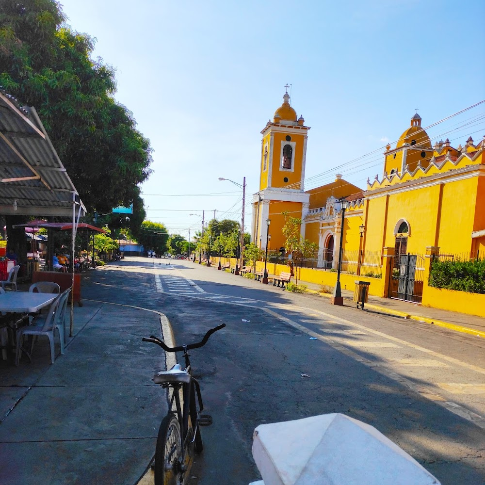
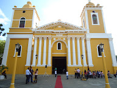
Playa de Nahualapa
Bahía semicircular de aguas mansas protegida de vientos fuertes, rodeada de esteros vírgenes y palmeras. Destino predilecto para el kayak de mar.
Playa Corinto & Paso Caballos
Extensa playa con puente emblemático de Paso Caballos. Gastronomía marina de renombre, conchas negras de manglar y camarones frescos.
Playa Jiquilillo
Pueblo costero auténtico de pescadores con kilómetros de arena volcánica y oleaje constante. Puerta de entrada al estero de anidación de tortugas carey.
Playa Aposentillo
Playa de surf paradisíaca con la famosa ola The Boom y rompientes para todos los gustos. Pozas de agua clara durante marea baja.


Cascadas El Corozo
Múltiples caídas de agua escalonadas entre densos pinares segovianos. Pozas cristalinas de montaña y senderos de orquídeas silvestres.
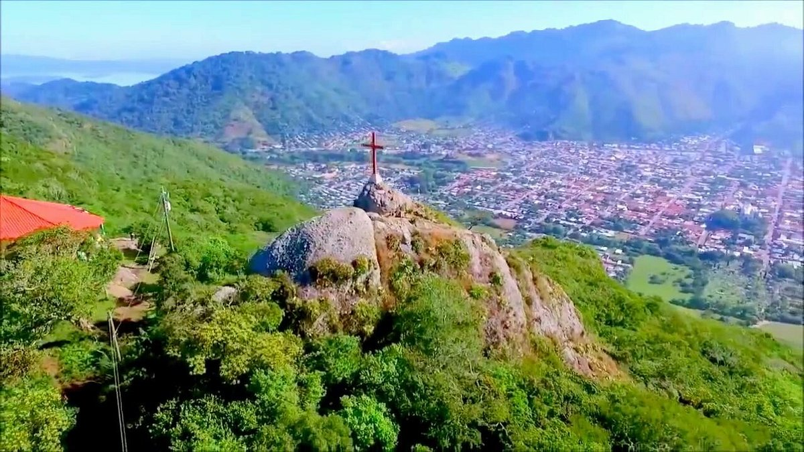
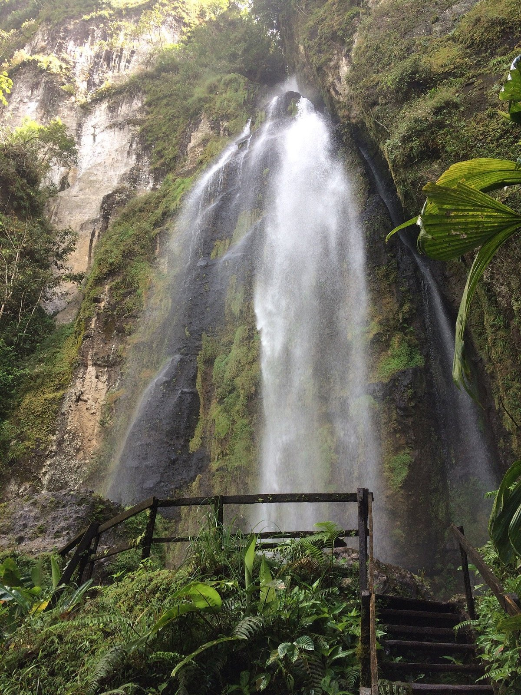
Cascada La Bujona
Impresionante cortina de agua de más de 20 metros de altura oculta en un cañón de helechos gigantes y cafetales de altura.
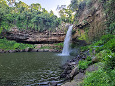
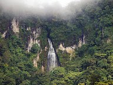
Salto Santa Emilia
Catarata rodeada de bosque lluvioso y cuevas milenarias de murciélagos. Poza profunda verde esmeralda apta para el baño reconfortante.
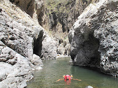
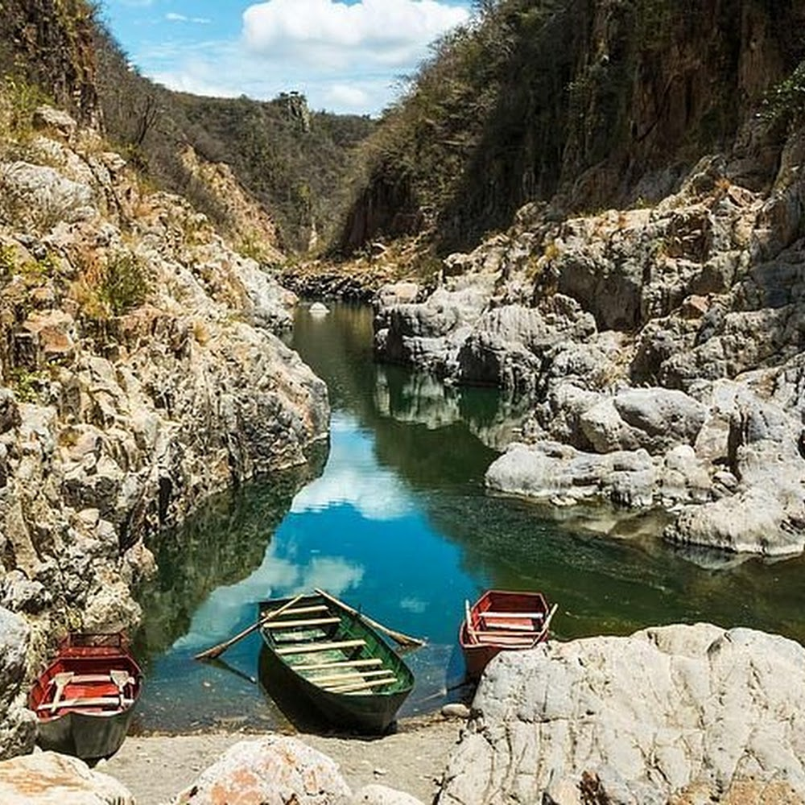
Laguna La Bruja
Mística laguna de montaña situada a más de 1,300 metros sobre el nivel del mar, envuelta en leyendas locales, niebla y densos pinares.
Laguna de Perlas (Pearl Lagoon)
La albufera costera más grande de Nicaragua, hogar de pueblos creole, miskitos y garífunas con canales de manglares y pesca deportiva soberana.
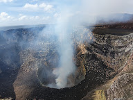
Laguna de Masaya
Cuerpo de agua volcánico al pie de la meseta de los pueblos blancos y del coloso Santiago. Miradores panorámicos y vegetación endémica.
Laguna de Xiloá
Cráter de aguas cálidas y ligeramente salobres a solo 15 minutos de Managua. Balneario con centro turístico, paseos en bote y quioscos típicos.
Laguna de Apoyeque
Cráter volcánico extinto con una de las lagunas más profundas y misteriosas de Centroamérica. Senderismo agreste y vistas al Lago Xolotlán.
Aguas Termales Don Alfonso
Pozas termales naturales ricas en minerales volcánicos y azufre terapéutico, entre paisajes montañosos y clima fresco segoviano.
Baños Termales de Tipitapa
Histórico balneario de aguas termales hidrotermales medicinales, sauna natural y restaurantes contiguos donde degustar el pescado a la Tipitapa.
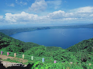
Mirador de Catarina
El mirador más afamado de Nicaragua con vista panorámica de 360 grados hacia la Laguna de Apoyo, Volcán Mombacho y Granada. Viveros y música de marimbas.
Mirador Sendero El Caballito
Sendero ecológico que desciende entre cafetales y hornos de cerámica hasta asomarse sobre el cráter de Apoyo con senderos de barro ancestral.
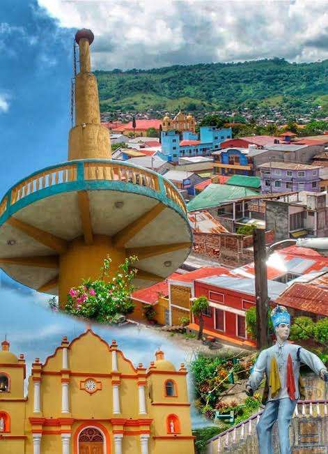
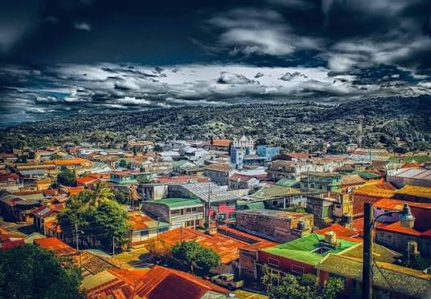
Mirador y Cuevas de Apaguajil
Formación rocosa monumental y cuevas precolombinas en el corazón ganadero de Camoapa con vistas infinitas hacia los valles centrales.
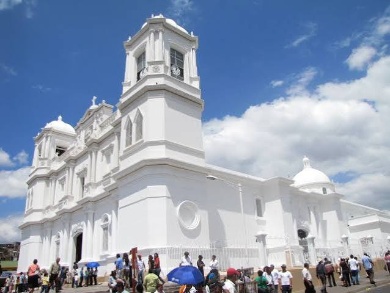
Parque Ecológico & Mirador Cerro El Calvario
Balcón natural sobre la ciudad de Matagalpa con senderos empedrados, canopy urbano, jardín botánico y la brisa permanente de la Perla del Septentrión.
Refugio de Vida Silvestre Chocoyero–El Brujo
Paredes de roca basáltica donde anidan miles de chocoyos verdes (pericos). Dos cascadas de bosque premontano y senderos de piñas ecológicas.


Refugio de Vida Silvestre Los Guatuzos
Humedal de importancia internacional RAMSAR con canales fluviales, caimanes, tortugas de río, monos aulladores y puente colgante de dosel.
Refugio de Vida Silvestre Río Escalante - Chacocente
Uno de los últimos bosques tropicales secos del Pacífico y una de las 9 playas del planeta donde ocurren arribadas masivas de tortugas paslama.
Cerro Mogotón (Punto Más Alto de Nicaragua)
La cumbre máxima de Nicaragua con 2,107 metros de altitud. Bosques de niebla, robledales centenarios, musgos y vistas sin fin hacia Centroamérica.
Reserva Natural Cerro El Arenal
Bosque nuboso primario que abastece de agua a la región norteña. Senderos con musgos, bromelias, quetzales y cafetales de sombra agroecológica.
Reserva Natural Estero Padre Ramos
Uno de los bosques de manglar mejor conservados de Mesoamérica. Canales laberínticos protegidos de agua calma y nidos de tortuga carey.

Reserva de Biósfera Bosawás
El corazón del Corredor Biológico Mesoamericano y la mayor reserva de bosque tropical húmedo de Centroamérica. Territorio indígena Mayangna y Miskito.
Reserva Natural Macizo Peñas Blancas
Majestuoso muro de caliza blanca cubierto por nebliselva virgen. Nacimiento de más de 40 ríos y cataratas que caen de acantilados de 1,700m.
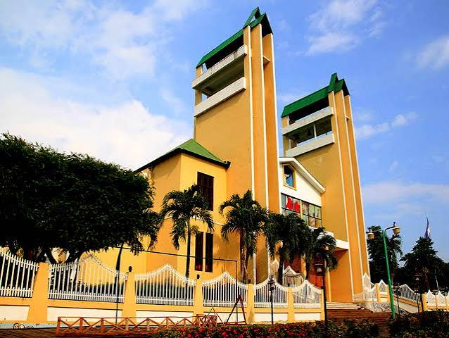
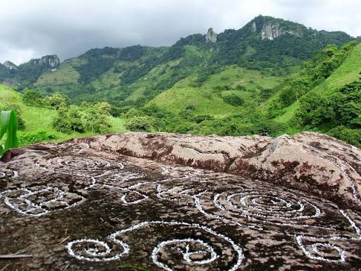
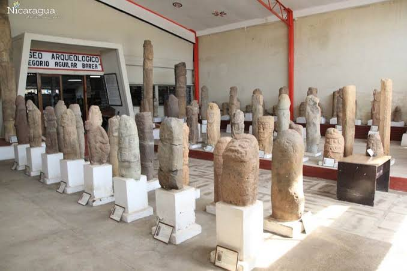
Reserva Natural Serranía Amerrisque
Cordillera mítica de origen precolombino con farallones que inspiraron el nombre de América según geógrafos. Pinturas rupestres y cultura chontaleña.
Reserva Natural Tepesomoto–La Patasta
Meseta de clima templado con miradores de 1,700m hacia Honduras y el Golfo de Fonseca. Bosques de robles y cooperativas de flores y fresas.

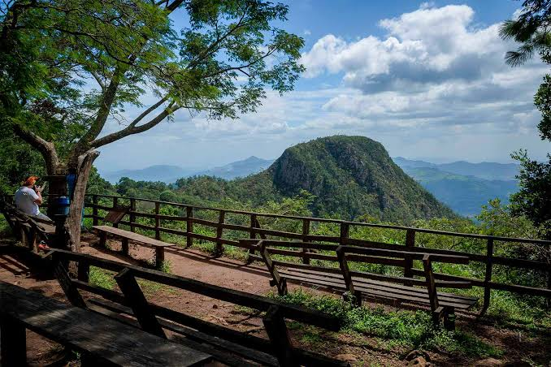
Reserva Natural Tisey–Estanzuela
Catarata de La Estanzuela, esculturas labradas en piedra viva por Don Alberto Gutiérrez en El Jalacate y talleres de queso artesanal suizo-segoviano.
Reserva Natural Miraflor Moropotente
Pionera del turismo rural comunitario en Nicaragua con más de 200 especies de orquídeas, tres zonas climáticas, fincas de café orgánico y hospedajes campesinos.
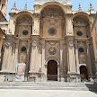

Isletas de Granada & Fuerte San Pablo
Archipiélago de 365 islas formadas por la avalancha milenaria del Volcán Mombacho en el Gran Lago. Fortaleza colonial San Pablo y avistamiento de garzas.
Archipiélago de Solentiname
36 islas sagradas en el sur del Gran Lago. Cuna de la pintura primitivista y artesanía de madera balsa, petroglifos indígenas y silencio contemplativo.
Cayos Perlas (Pearl Cays)
18 cayos caribeños deshabitados de arena blanca y aguas transparentes color esmeralda. Snorkel en arrecifes vírgenes y avistamiento de delfines.
Isla del Amor (Lago Xolotlán)
Isla dentro del Lago de Managua con senderos ecológicos, miradores hacia el Volcán Momotombo, piscinas y travesía en barco desde el Puerto Salvador Allende.
Little Corn Island
La joya caribeña sin vehículos a motor. Senderos a pie entre selva y cocoteros, playas de postal Otto Beach y buceo de primer orden mundial.
Eco Albergue La Fundadora
Antigua hacienda cafetalera convertida en cooperativa campesina modelo. Senderos a cascadas, ordeño tradicional de vacas y cata de café orgánico.
Campamento Vida Joven – La Finca
Campamento ecológico y finca cafetalera en las montañas de La Dalia con tirolesa sobre lagunas, deportes de aventura y labor social comunitaria.
Sopa de Mondongo de Masatepe
La reina de las sopas nicaragüenses. Toalla de res en trozos suaves, verduras criollas (quequisque, chayote, elote, yuca), naranja agria y tortillas calientes.
Gallo Pinto Campesino con Cuajada
Arroz frito y frijoles rojos criollos con cebolla y chiltoma, acompañado de cuajada fresca ahumada de hacienda, plátano frito y crema pura de campo.
Nacatamal de Masa Campesina
Masa de maíz criollo condimentada con manteca de cerdo, carne marinada, arroz, papas, rodajas de tomate, cebolla, hierbabuena y chile en hoja de plátano.
La Güirila con Cuajada y Crema
Tortilla gruesa y dulce elaborada con maíz tierno recién desgranado, asada sobre hoja de plátano al comal de barro, servida con cuajada fresca y crema.
Fresco de Cacao Tradicional en Jícara
Grano de cacao criollo tostado, molido con arroz, canela y leche fresca de hacienda, servido con abundante hielo picado en jícaras artesanales de filigrana.
Pinolillo Pinolero Tradicional
Bebida nacional a base de maíz blanco tostado y cacao molido con especias sagradas (pimienta de chapa y canela). Servido en jícaras con huacal.
Fresco de Grama con Limón
Hierba de grama medicinal hervida con canela y esencia dulce, aromatizada con jugo de limón criollo. La bebida más refrescante del calor granadino.
Torta Tres Leches Tradicional
Bizcocho esponjoso bañado en la trinidad láctea de leche evaporada, leche condensada y crema pura de campo, coronado con merengue y canela.
Buñuelos de Yuca con Miel de Rapiña
Masa de yuca rallada y queso seco frita hasta quedar dorada y crocante por fuera y suave por dentro, bañada en jarabe hirviendo de dulce de caña.
Almíbar de Papaya, Jocote y Mango
Dulce ancestral de Semana Santa y Purísimas elaborado con papaya verde en tiras, jocotes maduros, mangos criollos, grosellas y dulce de rapadura en paila de cobre.
Mercado de Artesanías de Masaya
Fortaleza neogótica del siglo XIX con más de 200 talleres de artesanos de hamacas, calzado de cuero, madera labrada, máscaras de Güegüense y bailes folclóricos.
Talleres de Cerámica Negra de Matagalpa
Técnica precolombina de bruñido con piedra de río y ahumado con pino y hojas secas que otorga a las piezas un negro azabache brillante único en el mundo.
Telares Indígenas El Chile
Hilado manual de algodón teñido con tintes botánicos naturales (corteza de mora, cáscara de jícaro, achiote) en telares tradicionales de madera.
Mercado Roberto Huembes (Pabellón de Artesanías)
El mayor concentrador de artesanía nacional de los 15 departamentos y 2 regiones autónomas, guitarras de Masaya, hamacas, cuero y dulces de la Purísima.
Cooperativa de Artesanas de Loma Panda
Esculturas talladas en piedra marmolina extraída de los cerros de Limay. Las mujeres de Loma Panda plasman figuras campesinas y maternidades célebres.
Talleres de Alfarería San Juan de Oriente
Pueblo de alfareros milenarios donde casi todas las casas cuentan con horno de leña y torno. Réplicas precolombinas polícromas y cerámica contemporánea.
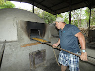
Totogalpa – Artesanías de Tusa de Maíz
Mujeres indígenas segovianas transforman la hoja seca de la mazorca (tusa) en muñecas tradicionales, flores de colores botánicos y cuadros decorativos.
Talleres Tradicionales de Hamacas de Masaya
Hamacas tejidas punto a punto con hilo de algodón 100%, flecos de madera tallada y varillas de laurel. El reposo campesino elevado a arte patrimonio.
Calculadora de Retorno Rural Campesino
Calcula cómo el modelo de comisión 0% de Baqueano erradica la fuga del 20-25% que imponen las OTAs foráneas, dejando el dinero íntegro en las comunidades nicaragüenses.
Cotizador Bimoneda con Leyes 1210 & 1211 INTUR
El marco normativo vigente (Ley No. 1210 General de Turismo y Ley No. 1211 de Incentivos para los Desarrollos Turísticos) promueve el turismo comunitario y establece el tratamiento tributario aplicable a prestadores registrados.
Directorio de Emergencia & Centros Médicos
Líneas de auxilio inmediato, hospitales de referencia nacional y puestos de salud comunitarios activos las 24 horas en las principales rutas y senderos de Nicaragua.
Hospitales de Referencia 24/7
Atención médica integral y urgenciasManagua · Acreditación Internacional Diamond
+505 2222-2430Cabecera Norte · Atención a Cañón de Somoto y Las Segovias
+505 2713-2415Pacífico Sur · Cobertura a Isletas, Mombacho y Apoyo
+505 2552-2438Policía Nacional & Turística
Línea Nacional de Emergencias: 118Vigilancia en bahías, playas de surf y miradores costeros
Línea 118 / +505 2568-2458Custodia del centro colonial, Calzada y puerto fluvial
Línea 118 / +505 2552-2222Moyogalpa & Altagracia · Asistencia a senderistas
Línea 118 / +505 2569-4215Bomberos Unificados de Nicaragua
Línea Rápida de Rescate: 115Rescate acuático, asistencia en costa y primeros auxilios
Línea 115 / +505 2568-2320Rescate en cráter volcánico, Laguna de Apoyo y senderos
Línea 115 / +505 2522-2222Atención en cañadas, ríos y senderismo de montaña
Línea 115 / +505 2772-2333Centros de Salud & Puestos MINSA
Atención ambulatoria y primeros auxiliosUrgencias 24/7 y estabilización en ruta de volcanes
+505 2569-4244Guía de auxilio inmediato y botiquín de cañonismo
+505 8642-1180Emergencias insulares, picaduras y auxilio marino
+505 2575-5122